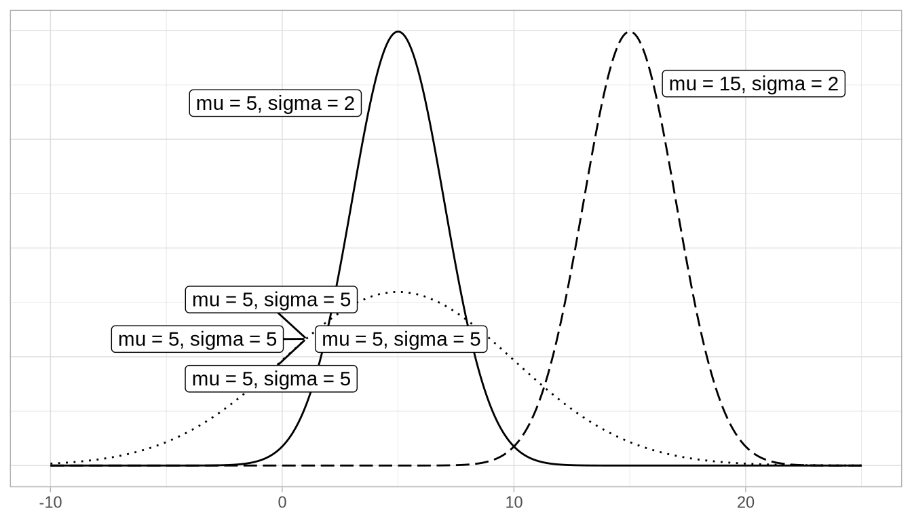
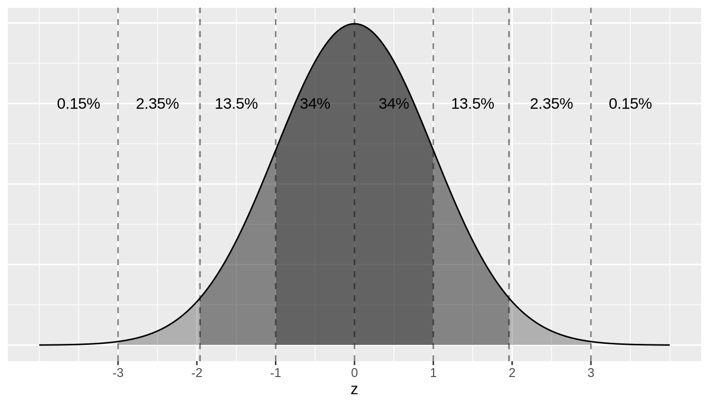

통계적 배경
기초 통계 용어
다음의 모든 통계 용어는 수치형(numerical) 변수에만 적용되지만, 분포(distribution)는 수치형과 범주형 변수 모두에 존재할 수 있습니다.
평균 (Mean)
평균(mean)은 가장 흔히 보고되는 중심 측도(measure of center)입니다. 흔히 average라고도 불리지만, 이 용어는 다소 모호할 수 있습니다. 평균은 모든 데이터 요소의 합을 요소의 개수로 나눈 값입니다. \(n\)개의 데이터 포인트가 있다면 평균은 다음과 같습니다.
\[Mean = \frac{x_1 + x_2 + \cdots + x_n}{n}\]
중앙값 (Median)
중앙값은 먼저 변수의 데이터를 가장 작은 것부터 가장 큰 것 순으로 정렬하여 계산합니다. 데이터를 정렬한 후 리스트에서 가운데 있는 요소가 중앙값(median)입니다. 만약 가운데가 두 값 사이에 있다면, 중앙값은 그 두 중간값의 평균입니다.
표준 편차와 분산
다음으로 변수의 표준 편차(standard deviation, sd)에 대해 논의하겠습니다. 공식이 처음에는 다소 위협적일 수 있지만, 이는 본질적으로 주어진 데이터 값이 평균에서 얼마나 떨어져 있을 것으로 기대되는지를 측정하는 지표라는 점을 기억하는 것이 중요합니다.
\[sd = \sqrt{\frac{(x_1 - Mean)^2 + (x_2 - Mean)^2 + \cdots + (x_n - Mean)^2}{n - 1}}\]
변수의 분산(variance)은 단지 표준 편차를 제곱한 것입니다.
\[variance = sd^2 = \frac{(x_1 - Mean)^2 + (x_2 - Mean)^2 + \cdots + (x_n - Mean)^2}{n - 1}\]
다섯 수치 요약 (Five-number summary)
다섯 수치 요약(five-number summary)은 다섯 개의 요약 통계량으로 구성됩니다: 최솟값, 제1사분위수(25백분위수), 제2사분위수(중앙값 또는 50백분위수), 제3사분위수(75백분위수), 그리고 최댓값입니다. 변수의 다섯 수치 요약은 2.7.1절(5NG#4: 박스 플롯)에서 본 것처럼 박스 그래프를 그릴 때 사용됩니다.
사분위수는 다음과 같이 계산됩니다:
- 제1사분위수(\(Q_1\)): 정렬된 데이터의 전반부 중앙값
- 제3사분위수(\(Q_3\)): 정렬된 데이터의 후반부 중앙값
사분위수 범위(interquartile range, IQR)는 \(Q_3 - Q_1\)로 정의되며, 중앙 50%의 값이 얼마나 퍼져 있는지를 나타내는 척도입니다. IQR은 박스 그래프에서 상자의 길이에 해당합니다.
중앙값과 IQR은 평균 및 표준 편차와 달리 이상치(outliers)의 영향을 크게 받지 않습니다. 따라서 비대칭(skewed 데이터셋에는 이들을 사용하는 것이 권장됩니다. 이 경우 중앙값과 IQR이 이상치에 더 강건하다(robust to outliers)고 말합니다.
분포 (Distribution)
변수의 분포(distribution)는 변수의 서로 다른 값들이 얼마나 자주 나타나는지를 보여줍니다. 분포 시각화를 통해 값들이 어디에 집중되어 있는지, 어떻게 변하는지, 그리고 전형적인 값이 어디쯤일지에 대한 정보를 얻을 수 있습니다. 또한 이상치의 존재를 알려주기도 합니다.
2장(데이터 시각화)에서 배운 것처럼, 히스토그램에서 구간 나누기(binning)를 사용하여 수치형 변수의 분포를 시각화할 수 있고, 막대 그래프를 사용하여 범주형 변수의 분포를 시각화할 수 있음을 상기하세요.
이상치 (Outliers)
이상치(outliers)는 “보통의” 값 범위를 크게 벗어나는 데이터셋의 값들에 해당합니다. 박스 그래프의 맥락에서, 기본적으로 이들은 \(Q_1 - (1.5 \cdot IQR)\)보다 작거나 \(Q_3 + (1.5 \cdot IQR)\)보다 큰 값들에 해당합니다.
정규 분포
이제 특별한 종류의 분포인 정규 분포(normal distributions)에 대해 논의해 보겠습니다. 이러한 종 모양의 분포는 두 가지 값에 의해 정의됩니다: (1) 분포의 중심을 위치시키는 평균 \(\mu\) (“mu”)와 (2) 분포의 변동(variation)을 결정하는 표준 편차 \(\sigma\) (“sigma”)입니다. 그림 Figure 13.1 에는 다음 세 가지 정규 분포를 그렸습니다:
- 실선 정규 곡선: 평균 \(\mu = 5\), 표준 편차 \(\sigma = 2\).
- 점선 정규 곡선: 평균 \(\mu = 5\), 표준 편차 \(\sigma = 5\).
- 파선 정규 곡선: 평균 \(\mu = 15\), 표준 편차 \(\sigma = 2\).
실선과 점선 정규 곡선은 공통 평균 \(\mu = 5\)로 인해 중심이 같음을 알 수 있습니다. 하지만 점선 정규 곡선은 표준 편차가 \(\sigma = 5\)로 더 크기 때문에 더 넓게 퍼져 있습니다. 반면, 실선과 파선 정규 곡선은 공통 표준 편차 \(\sigma = 2\)로 인해 변동 폭이 같습니다. 하지만 이들은 서로 다른 위치에 중심이 있습니다.
평균 \(\mu = 0\)이고 표준 편차 \(\sigma = 1\)일 때, 이 정규 분포는 특별한 이름을 가집니다. 이를 표준 정규 분포(standard normal distribution) 또는 \(z\)-곡선이라고 부릅니다.
게다가 변수가 정규 곡선을 따른다면, 우리가 사용할 수 있는 세 가지 경험적 법칙(rules of thumb)이 있습니다:
- 값의 68%는 평균의 \(\pm\) 1 표준 편차 범위 내에 있습니다.
- 값의 95%는 평균의 \(\pm\) 1.96 \(\approx\) 2 표준 편차 범위 내에 있습니다.
- 값의 99.7%는 평균의 \(\pm\) 3 표준 편차 범위 내에 있습니다.
이를 그림 Figure 13.2 의 표준 정규 곡선에서 설명해 보겠습니다. 파선은 -3, -1.96, -1, 0, 1, 1.96, 3 지점에 있습니다. 이 7개의 선은 x축을 8개의 구간으로 나눕니다. 각 8개 구간에 대한 정규 곡선 아래 면적이 표시되어 있으며, 이를 모두 더하면 100%가 됩니다. 예를 들어:
- 중간 두 구간은 -1에서 1 사이의 구간을 나타냅니다. 이 구간 위의 음영 처리된 면적은 34% + 34% = 68%를 나타냅니다. 즉, 값의 68%에 해당합니다.
- 중간 네 구간은 -1.96에서 1.96 사이의 구간을 나타냅니다. 이 구간 위의 음영 처리된 면적은 13.5% + 34% + 34% + 13.5% = 95%를 나타냅니다. 즉, 값의 95%에 해당합니다.
- 중간 여섯 구간은 -3에서 3 사이의 구간을 나타냅니다. 이 구간 위의 음영 처리된 면적은 2.35% + 13.5% + 34% + 34% + 13.5% + 2.35% = 99.7%를 나타냅니다. 즉, 값의 99.7%에 해당합니다.

학습 확인
평균 \(\mu = 6\)이고 표준 편차 \(\sigma = 3\)인 정규 분포가 있다고 가정해 보겠습니다.
(LCA.1) 정규 곡선 아래 면적 중 3보다 작은 비율은 얼마인가요? 12보다 큰 비율은요? 0과 12 사이의 비율은요?
(LCA.2) 정규 곡선 아래 면적의 2.5백분위수는 얼마인가요? 97.5백분위수는요? 100백분위수는요?
log10 변환
가장 간단하게 말해서, log10 변환은 밑이 10인 로그(logarithms)를 반환합니다. 예를 들어 \(1000 = 10^3\)이므로, R에서 log10(1000)을 실행하면 3이 반환됩니다. log10 변환을 되돌리려면 10을 이 값만큼 거듭제곱합니다. 예를 들어, 이전의 log10 변환을 되돌려 원래 값인 1000을 얻으려면 R에서 10^3 = 1000을 실행하여 10의 3승을 계산합니다.
로그 변환을 사용하면 규모의 차수(orders of magnitude)의 변화에 집중할 수 있습니다. 즉, 가산적 변화(additive changes) 대신 승법적 변화(multiplicative changes)에 집중할 수 있게 해줍니다. 이 아이디어를 2019년 미국 달러 기준 소비재 가격 예시와 함께 표 Table 13.1 에서 설명해 보겠습니다.
| Price | log10(Price) | Order of magnitude | Examples |
|---|---|---|---|
| $1 | 0 | 일 단위(Singles) |커피 | 한 잔 | |
| $10 | 1 | 십 단위(Tens) |책 | | |
| $100 | 2 | 백 단위(Hundreds) |휴대 | 화 | |
| $1,000 | 3 | 천 단위(Thousands) |고화 | TV | |
| $10,000 | 4 | 만 단위(Tens of thousands) |자동 | | |
| $100,000 | 5 | 십만 단위(Hundreds of thousands) |고급 | 동차 및 주택 | |
| $1,000,000 | 6 | 백만 단위(Millions) |고급 | 택 | |
표 Table 13.1 을 바탕으로 log10 변환에 대해 몇 가지 언급해 보겠습니다:
- $76의 log10 변환된 값을 알고 싶다고 합시다. 계산기 없이는 정확히 계산하기 어렵습니다. 하지만 $76은 $10와 $100 사이에 있고 log10(10) = 1, log10(100) = 2이므로, log10(76)은 1과 2 사이에 있음을 알 수 있습니다. 실제로 log10(76)은 1.880814입니다.
- log10 변환은 단조적(monotonic)입니다. 즉, 순서를 보존합니다. 따라서 가격 A가 가격 B보다 낮다면, log10(가격 A) 역시 log10(가격 B)보다 낮을 것입니다.
- 가장 중요한 점은, log10 스케일에서 1의 증가는 원래 스케일에서 절대적인 가산적 변화가 아니라 상대적인 승법적 변화에 대응한다는 것입니다. 예를 들어 log10(가격)이 3에서 4로 증가하는 것은 10배의 승법적 증가($100에서 $1000로)에 대응합니다.